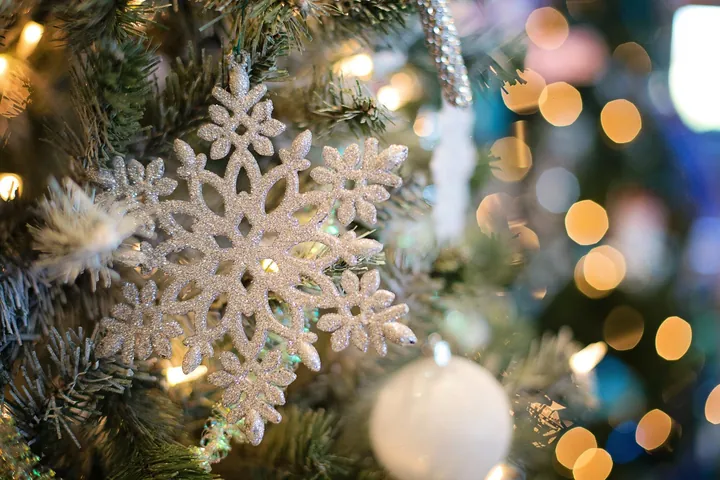

da ven 20 nov a dom 27 dic
Mercatini di Natale
La magica atmosfera dei Mercatini di Natale torna ad immergere Verona nella pura essenza delle feste: luci sfavillanti, profumi avvolgenti e quel senso di stupore che incanta grandi e piccini.
 Indicazioni
Indicazioni
- Costi e prenotazioni
- Costo non indicato · Prenotazione non indicata
- Programma
- Programma da verificare. Apri la fonte ufficiale per orari e possibili aggiornamenti.
- In caso di maltempo
- Nessuna indicazione specifica pubblicata.
- Note
- Acquisito automaticamente dalla fonte.
L’EVENTO
Descrizione completa
La magica atmosfera dei Mercatini di Natale torna ad immergere Verona nella pura essenza delle feste: luci sfavillanti, profumi avvolgenti e quel senso di stupore che incanta grandi e piccini.
Il Natale prende vita nella 18ª Edizione dei Mercatini , che rallegrerà il centro storico dal 20 novembre al 27 dicembre 2026 . Ogni piazza del centro storico racconta una diversa sfumatura della festa. In Piazza Bra, protetti dal maestoso Anfiteatro Romano, i tipici chalet in legno propongono artigianato autentico, decorazioni tradizionali e delizie enogastronomiche. Piazza dei Signori ospita la magia del Villaggio Flover , un vero angolo di magia ricco di addobbi preziosi. Piazza Sacco e Vanzetti, vicino all’Arsenale, accontenta i più dinamici che cercano il divertimento nel Magico Mondo del Ghiaccio: una grande pista di ghiaccio , dove pattinare al ritmo delle musiche natalizie. L’inaugurazione ufficiale con l’accensione delle luminarie sarà sabato 21 novembre alle ore 17:00 in Piazza Bra.
IL PROGRAMMA
Programma e orari
Appuntamenti raccolti dalle fonti elencate. Dove manca un orario, non è ancora disponibile in questa scheda.
Programma pubblicato
- 2026-11-20 — 2026-11-20 · 17:00:00
- 2026-11-22 — 2026-12-08 · 10:00:00
- 2026-11-22 — 2026-12-23 · 10:00:00
- 2026-12-09 — 2026-12-09 · 10:00:00
- 2026-12-10 — 2026-12-23 · 10:00:00
- 2026-12-24 — 2026-12-24 · 10:00:00
- 2026-12-25 — 2026-12-25 · 16:00:00
- 2026-12-26 — 2026-12-26 · 10:00:00
- 2026-12-27 — 2026-12-27 · 10:00:00
INFORMAZIONI UTILI
Prima di partire
- Controllare la fonte prima di partire.
ORGANIZZAZIONE